name: title class: center, middle, title count: false # The CanDIG Project ## National Genomic Analysis for a Federal Canada <br/> <br/> Jonathan Dursi<br/> 17 May 2018<br/> Ontario Advanced Research Computing Congress<br/> http://candig.github.io/OARCC-May-2018 --- class: blank # Canada will save the Genomics* World .center[<img width="90%" src="assets/img/patriotic.png">] (*and other big-data fields) --- class: normal layout: false # Canada will save the Genomics World ## From Silo-megaddon .center[<img width="100%" src="assets/img/silomegaddon.png">] --- class: normal # Genomic Data Volumes Growing Rapidly Genomic volumes currently doubling every 7-12 months Currently driven by research projects, on both human and model organisms .center[<img src="assets/img/genomic-data-volumes.png" style="float: center;" width=85%>] (From [Stephens _et al_. (2015) “Big Data: Astronomical or Genomical?”](https://doi.org/10.1371/journal.pbio.1002195)) --- class: normal # Genomic Data Volumes Growing Rapidly This (IMHO) understates the near-term rate of change New devices are arriving which will move some sequencing from specialized core facilities to small labs (_c.f._ “killer micros”) .center[<img src="assets/img/MinION.jpg" width=40%> 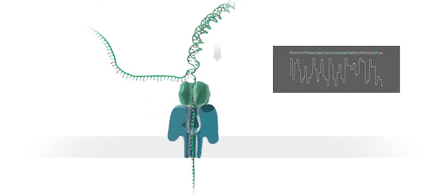] [Credit: [Oxford Nanopore](http://www.nanoporetech.com)] --- class: normal # New Data Types: Metagenomics Metagenomics – doing sequencing of an environmental sample, and putting together a census of microbes * Direct Human health - Wounds - infection - Environment - pathogens, antibiotic resistance - Gut flora, skin, _etc._ * Environmental effects on health - Water, homes, etc. .center[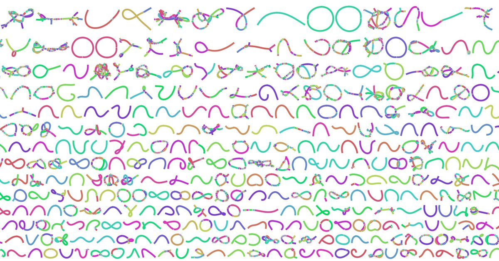] --- class: normal # New Data Types: RNA Entirely new data types are becoming available for the first time: _E.g._, direct RNA sequencing [Credit: [Oxford Nanopore](http://www.nanoporetech.com)] .center[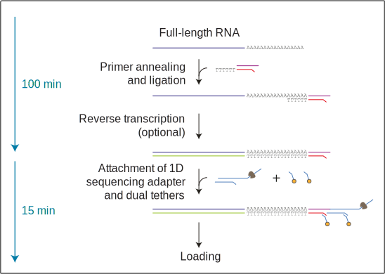] --- class: normal # Transcriptomics DNA is just the beginning - the recipe book that is read from during cell processes. .center[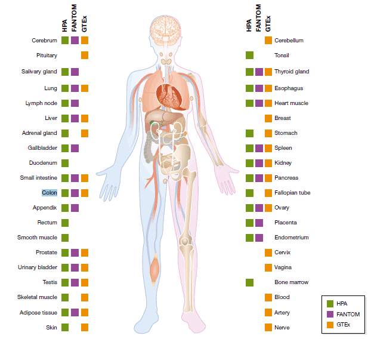] Each cell type expresses different levels of transcripts for genes, and often different forms of those transcripts Directly describes disease state --- class: normal # Genomic Medicine And those changes in research genomics will be tiny compared to what's coming: genomic medicine. .center[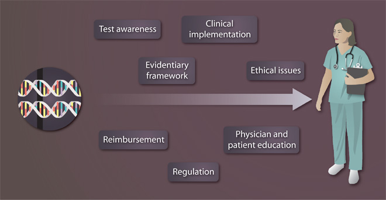] -- Whole genome sequencing already starting to become part of the toolkit for diagnosing rare diseases, oncology ~$1000 is a lot for a test, but not unfathomable As becomes cheaper/easier/faster, will become standard of care for more and more cases And medicine is _huge_ - hospital spending alone is ~70x entire CIHR budget --- class: normal # Genomic Privacy But health data is (rightly) treated with the strictest privacy controls .center[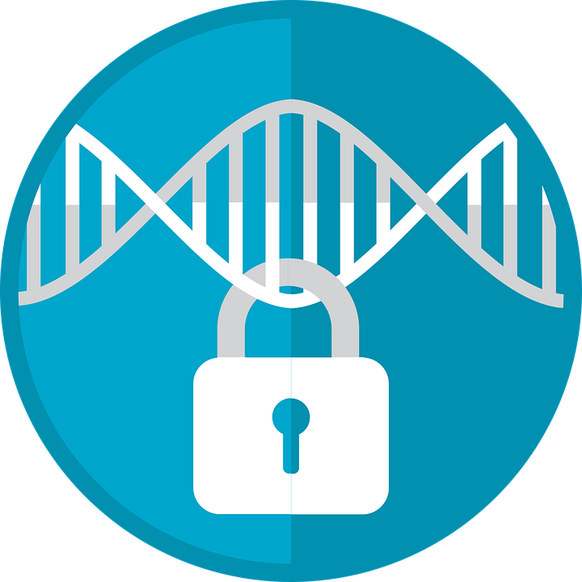] Some health data can be anonymized for study Genomic data is to some extent inherently identifiable An identifier that cannot be changed --- class: normal # What to do with the data? <img width="66%" style="float: right;" src="assets/img/silomegaddon.png"> <br/> Naturally, the tendency is to put the data in silos * Safe * Well understood Silo walls have two forms, usually coincident: * Technical (different sites, different systems) * Policy/Governance (different policies, different procedures) Data then analyzed by those within the silo or who can get within the silo --- class: normal # Siloed Data Is Squandered Data .pull-right[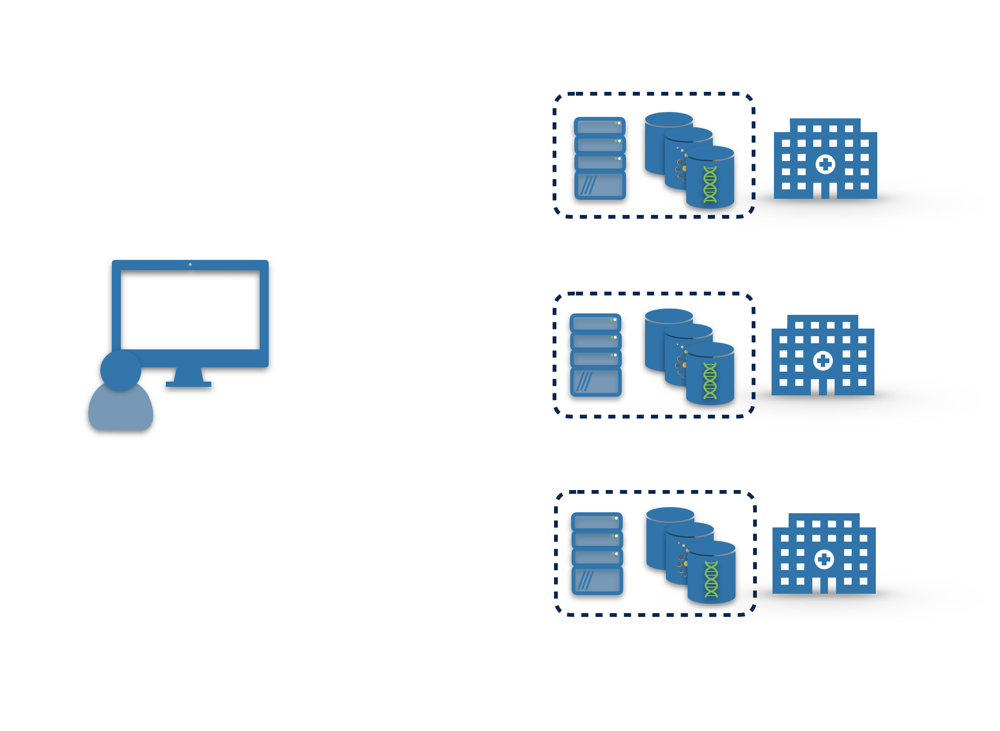] Those silos don't make research impossible, but greatly reduce the number and type of questions being asked. To perform cross-silo research, one must: -- * Know that there is data out there that would be useful for your study * Know where it is and who to get permission from * Get permission to use the data: - Bespoke policy agreement, involving legal teams or REB evaluation * Get permission to either work within the silo, - Usage agreements * Or get permission to transfer data out - Bespoke Data Transfer agreement, possible update to REB -- * Perform the analysis, which may or may not find something --- class: normal # Siloed Data Is Squandered Data .pull-right[] But health researchers need to be able to analyze as large sample sizes as possible: * Rare diseases (which collectively affect 5%+ of people): - Need large numbers of subjects to escape the \\(N=1\\) problem! * Precision oncology: - Many cancer cases are rare diseases if you look closely enough * Statistical power: - Most diseases have multiple causes, each one with weak signal - Need large study to separate signal from noise --- class: normal # Our International Colleagues Have A Cunning Plan: -- ## Bigger Silos .center[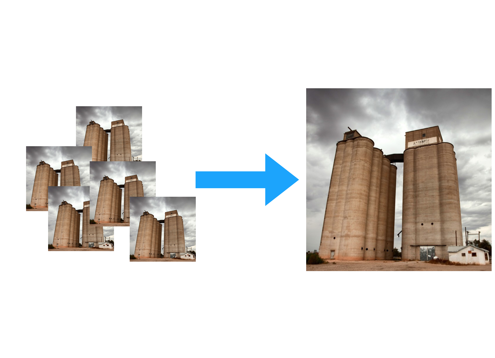] --- class: normal # Our International Colleagues Have A Cunning Plan: ## Bigger Silos .center[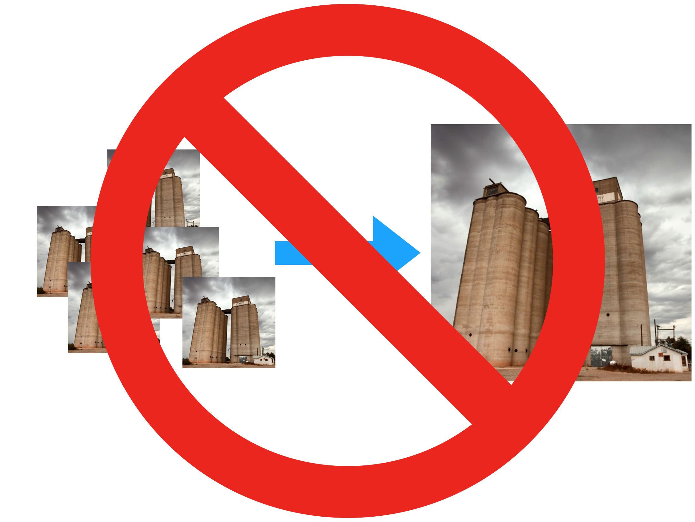] --- class: normal # Big Silos Aren't The Answer .pull-right[] The approach isn't completely without merit: * Reduce the number of techincal/policy hoops a researcher has to cross to get to a particular data size * dbGaP in the US, EGA in Europe -- But there are problems * Bigger silos tend to have higher walls * The silos tend to grow up around data types and technologies rather than populations or needs * There are scalability limits to the approach of dumping everything in a single silo * Works ok with individual research projects; but how to deal with healthcare systems? -- **The only scalable solution is federation between data stewards** --- class: normal # Enter Canada .center[<img width="90%" src="assets/img/patriotic.png">] --- class: normal # Canada is a Federation .pull-right[] <br/> In Canada, healthcare — and so health data — is a matter of exclusive provincial jursidiction * Each province has made its own decision about privacy tradeoffs based on its populations' own choices * Even if centralization of data scaled, differing provincial statutory and regulatory requirements would make it all but impossible -- But Canada is a federation, and understands the issues around data federation * _E.g._, CIHI - the [Canadian Institute for Heath Information](https://www.cihi.ca/en) --- class: normal # The CanDIG Project A _Canadian_ approach to analysis of genomic data: * National-scale populations * Respecting provincial, institutional stewards local control over their data, users. .center[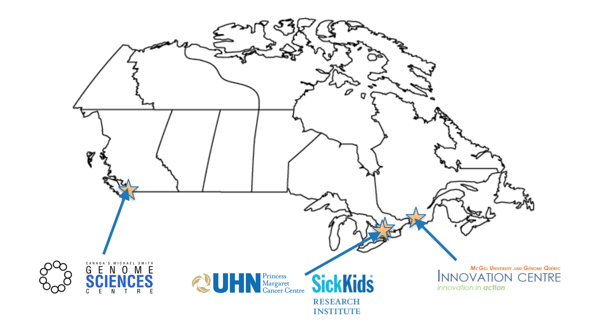] --- class: normal # The CanDIG Project .pull-right[] * Funded 4 year CFI cyberinfrastructure project * 1 year into the effort * Participation from Canada's largest health genome sequencing centres: - McGill University/Genome Québec Innovation Centre - Hospital For Sick Children - Princess Margaret Cancer Center - BC Cancer Care Agency / BC Genome Science Centre * Building the infrastructures for genomic analyses on national-scale data sets - Technological - Governance --- class: normal # De novo On the technical side, CanDIG is building a new infrastructure _de_ _novo_ .center[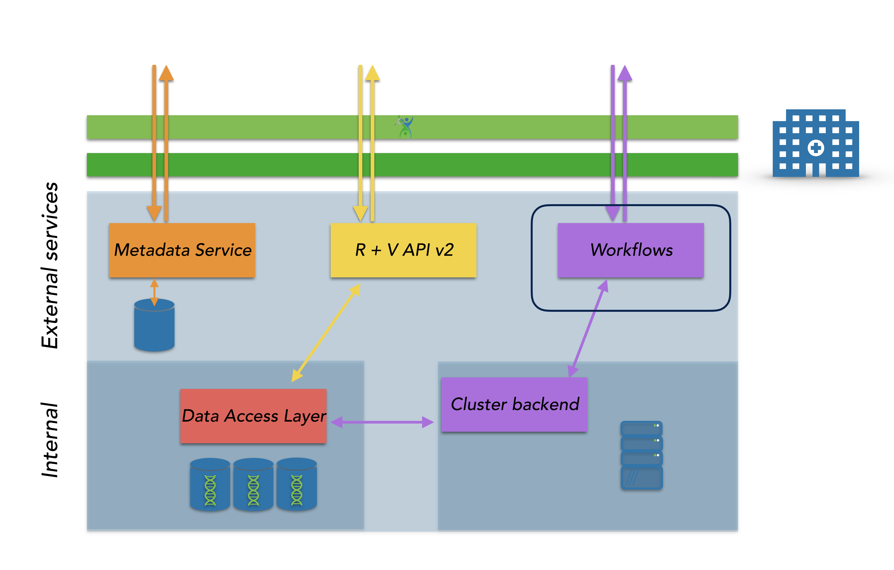] This has provided enormous opportunities; lap our international colleagues * New technologies: Go, Docker, REST APIs, OpenAPI, OIDC Connect --- class: normal # Technical: Decentralized .center[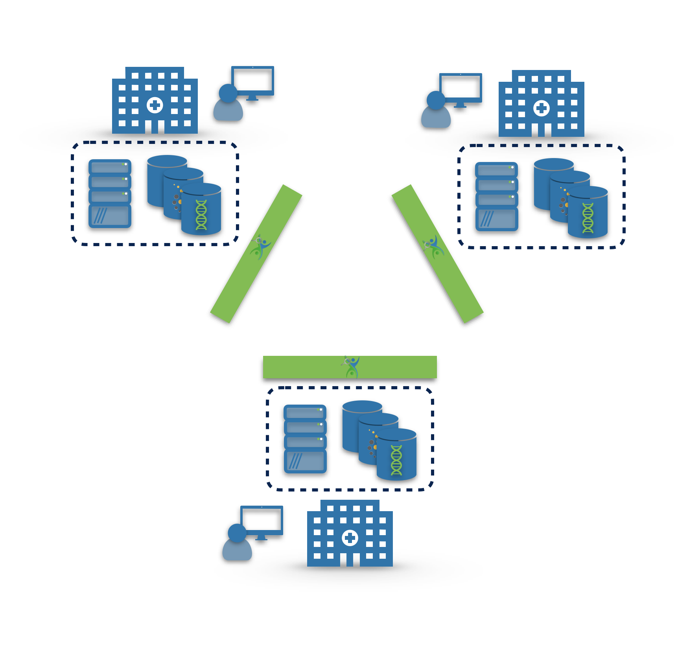] --- class: normal # Technical: Decentralized .pull-right[] Crucially, we are building a completely decentralized technical infrastructure * Shared nothing * Centralized nothing * Each data steward has complete control over: - Their systems - Access to the data under their stewardship --- class: normal # Technical: Modern, Secure, Standards-Based ## Authentication * Using modern, secure web technologies for authentication * Standards-based .center[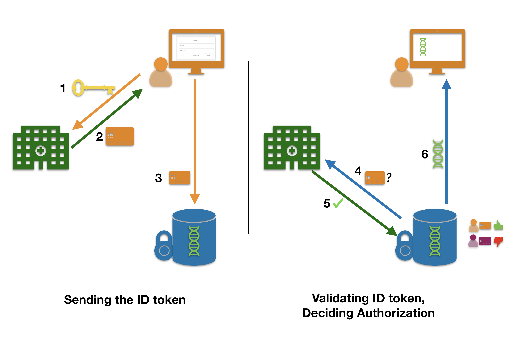] --- class: normal # Technical: Modern, Secure, Standards-Based ## Authentication .pull-right[] * Each site authenticates its own user with its own login * Person leaves, logins disabled right away Standards-based means improved interoperability: * Work plan drawn up with European Genome-Phenome Archive, ELIXIR Europe * Interoperability with European bioinformatics initiatives --- class: normal # Technical: Modern, Secure, Standards-Based ## API-Driven .pull-right[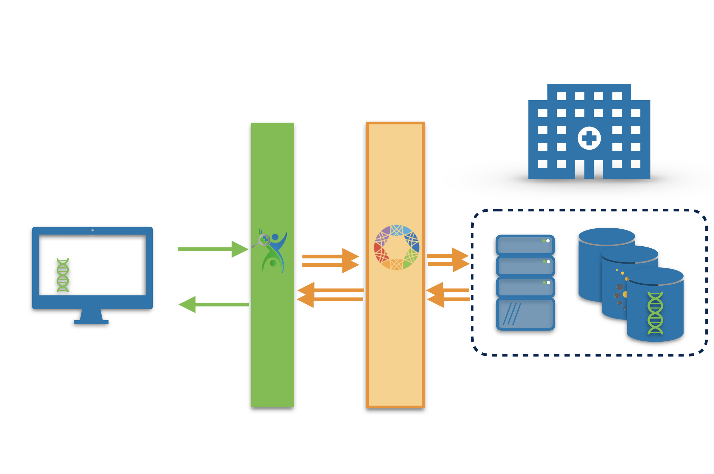] * Based on RESTful, web services-style APIs * No remote log-in to a shell * Excellent for logging, auditabilty -- API-first approach: * Microservices * API gateway * Swagger/OpenAPI * Makes testing, validation straightforward --- class: normal # Technical: Modern, Secure, Standards-Based ## Send Compute to Data .pull-right[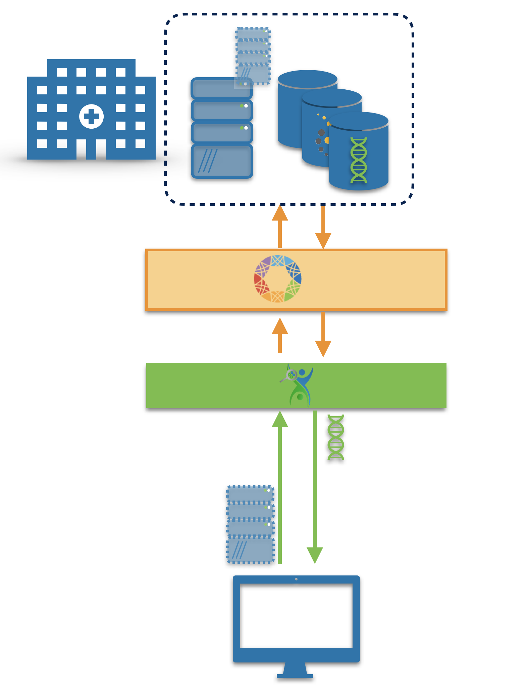] Don't want to — can't — pull data to where the analysis will take place * Send the processing to the data * Bundle up the analysis * Send it, where access can be controlled in a very fine-grained manner * Provide access to the resulting data through APIs --- class: normal # Technical: Modern, Secure, Standards-Based ## Send Compute to Data Have done extensive benchmarking of different container approaches * Some of the first to have done this .pull-right[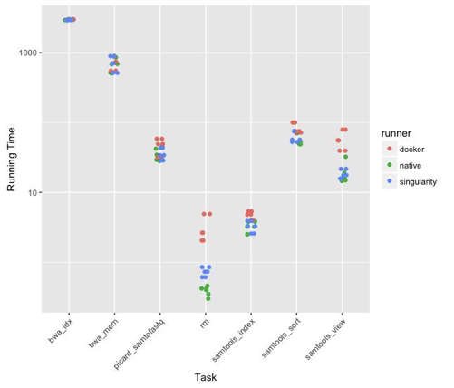] Building a container-based infratructure for genomics: * Docker for long-running services * Singularity for bioinformatics tasks --- class: normal # Technical: Modern, Secure, Standards-Based ## Authorization * Rule-Based and Attribute-Based access control .center[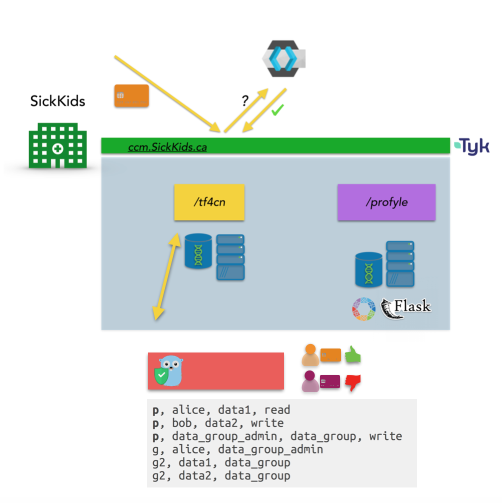] * Authorization policy engine applies policies to each request --- class: normal # Technical ## Federated .pull-right[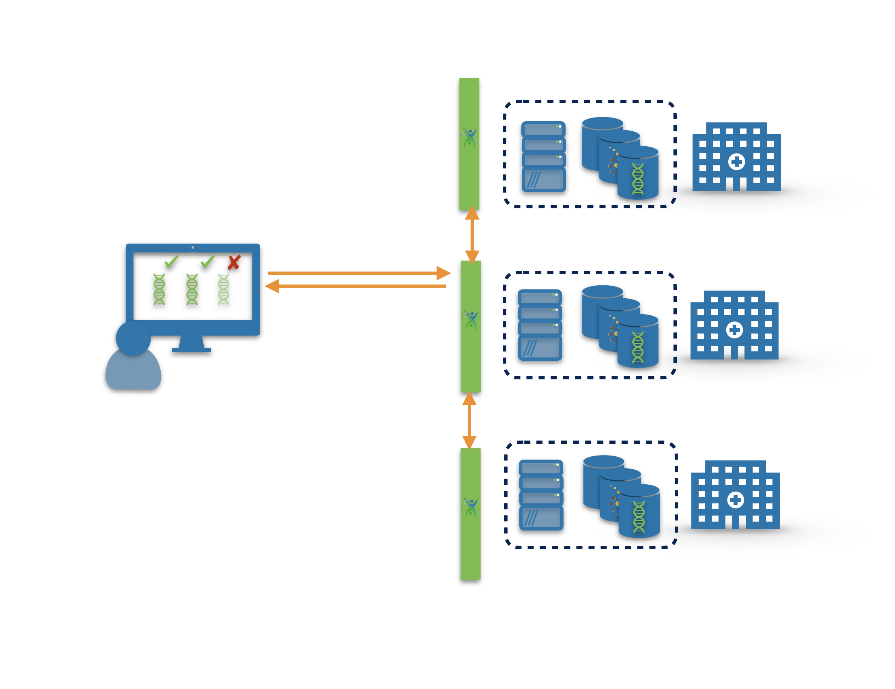] So far we've described silos * But silos with a building code for standardized cross-silo access * Security, Autonomy, while being able to interoperate --- class: normal # Technical ## Federated .pull-right[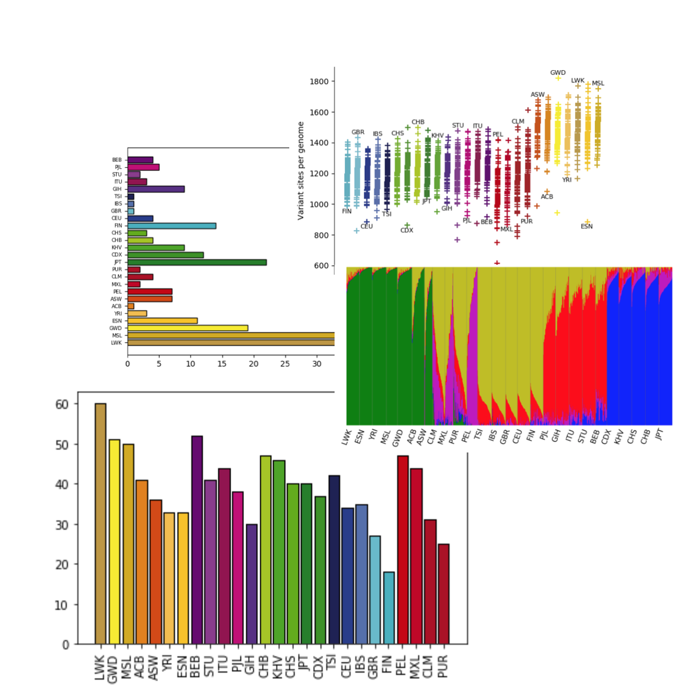] We've demonstrated that this approach works, using the [Thousand Genomes](https://en.wikipedia.org/wiki/1000_Genomes_Project) data set * Reproduce 1000 genomes variants analysis - Foundational results of population genomics * Reproduce them as long-running batch processes --- class: normal # Technical ## Federated .pull-right[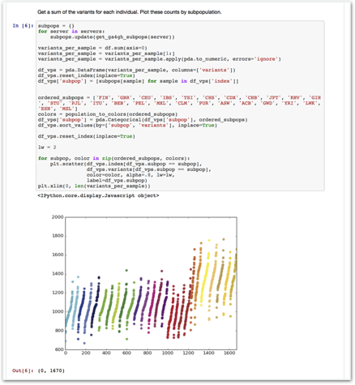] * Also run them interactively in Jupyter or RStudio notebooks --- class: normal # Governance .pull-right[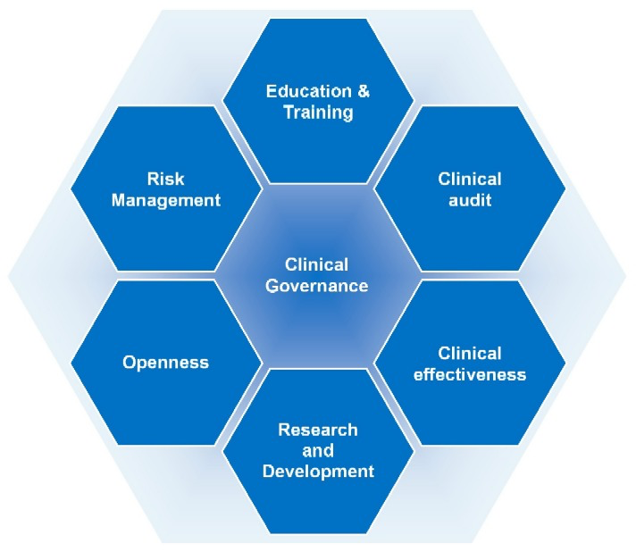] Technical issues are only part of the picture * Arguably the less complex part Have started our development with two new projects with established REB approvals, data sharing/transfer agreements: * PROFYLE * TF4CN -- Putting together a governance and oversight board to craft policies to build on these successes * Build a _framework_ for approvals, agreements * Build _standards_ for consents, access * Build shared policies and processes for privacy and security that meet _all_ requirements --- class: normal # Governance ## Research Projects - PROFYLE .pull-right[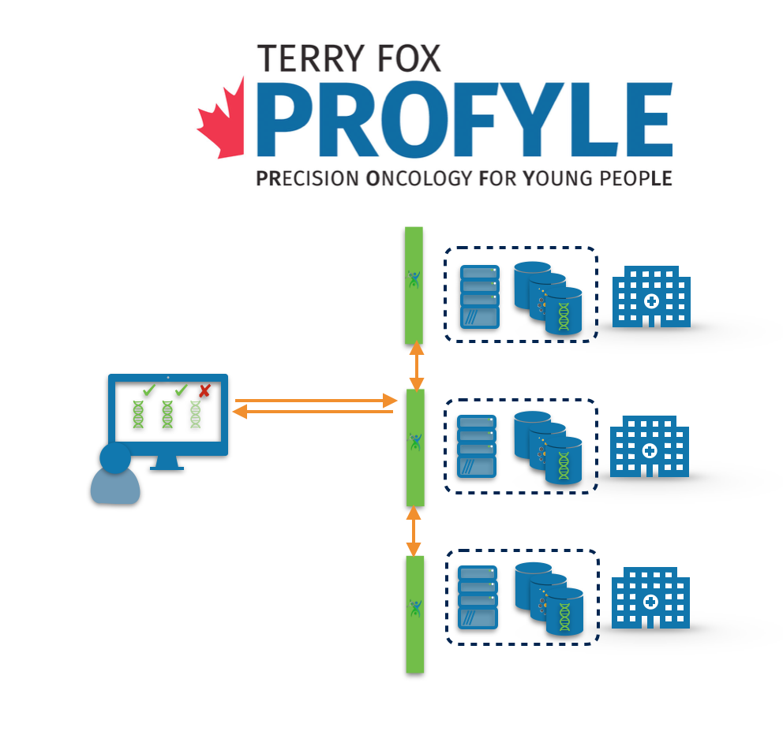] The PROFYLE project * Terry Fox Research Institute (TFRI) funded project for pediatric oncology * Samples being taken, pipelines being run - Provide a dashboard - Provide ability to explore the data - see variants by gene, _etc_ - Look for commonalities between these cases * Provide fine-grained access for researches already approved, while also allowing aggregated results for those with less acess --- class: normal # Governance ## Research Projects - TF4CN .pull-right[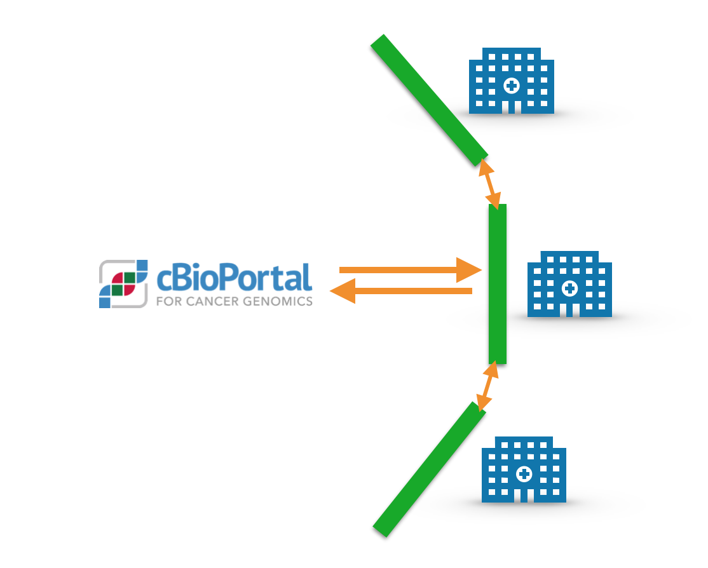] Support a clinical basket-style cancer trial Provide clinician access to detailed information on * subjects for assigning to sub-trials * subject progress Provide aggregated results afterwards --- class: normal # Governance ## Technical Choices In Support of Governance Data Governance is not a set of problems that can be solved by technological measures However, technological tools can open up some options We have built in from the beginning two approaches which give some flexibility * Differential privacy for private provision of aggregated data * ADA-M for computable consent and authorization --- class: normal # Randomization Approaches to Privacy ## Randomize Responses .pull-right[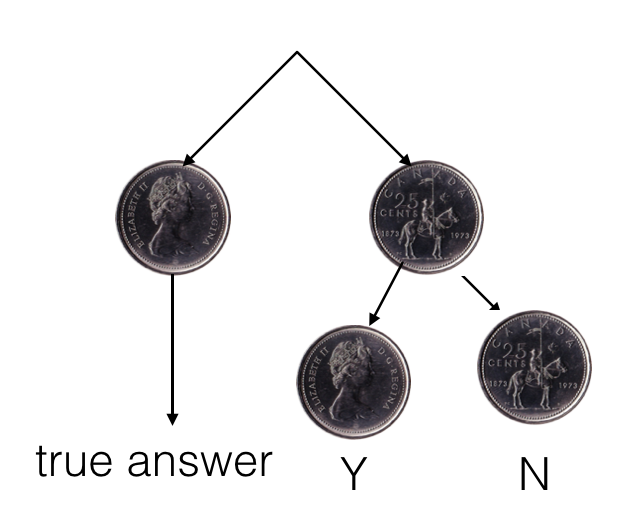] Old technique for surveying for behaviours which are illegal or have other stigma attached. “Have you ever stolen anything” * \\(p = 0.5\\) - true answer * \\(p = 0.5\\) - random answer * “bad” answer occurs w/ \\(p \approx 0.25\\); “plausible deniability” for any survey respondent. --- class: normal # Randomization Approaches to Privacy ## Randomize Responses .pull-right[] But at the same time, can estimate true overall frequencies (and correlations!) knowing the noise model! * If obtain frequency \\( \hat{f} \\) from the survey instrument, can calculate true frequency \\(f = 2(\hat{f} - 1/4)\\) * Need more samples for given variance, but can get accurate results while protecting each individual’s privacy. --- class: normal # Differential Privacy .center[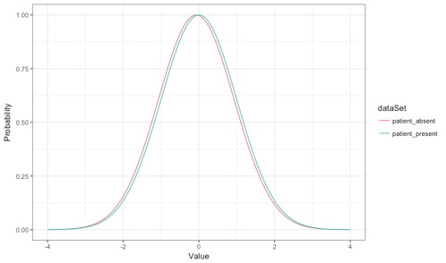] Different approach: keep inputs, add noise to outputs Add enough noise (and of right type) to ensure following guarantee: * Probability of an individual's data being leaked because it is in the data set is - bounded - small --- class: normal # Differential Privacy ## Guarantees Data *subject*: “There is a quantifiable, minimal, cost to my privacy by participating in this database”. Data *analyst*: “I would get an essentially equal distribution of answers from this query if any one row had been absent from the database”. --- class: normal # Automatable Discovery and Access Matrix ## ADA-M .pull-right[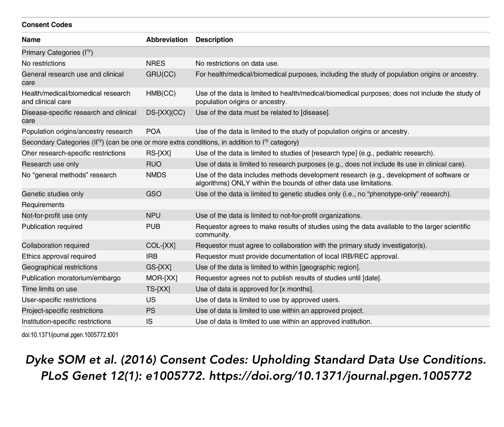] Comprehensive list of use and access rights for a data With corresponding consent text for patients, clinicians Machine readable! * Can make run-time decisions about what computations are authorizable --- class: normal # Part of an International Community .pull-right[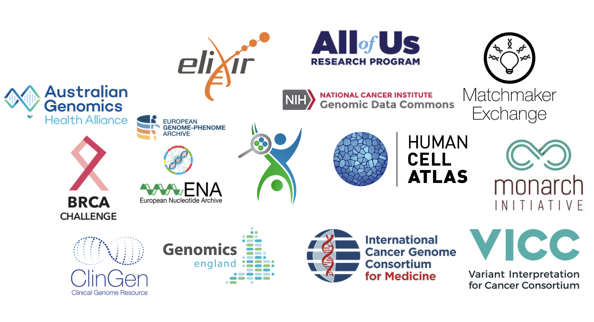] This fall, CanDIG was made a driver project of the international Global Alliance for Genomics and Health (GA4GH) * International standards-setting effort * Interoperability * Regulatory and Ethics * Advocate We can build on their work (_e.g._, ADA-M, data access standards) We are _already_ helping them build on our work of peer-to-peer federation --- class: normal # Nobody Said Data Federalism Was Easy .pull-right[] Data Federalism takes a lot of work: * Messy * Hard work * Lots of negotation, consensus building * Requires a lot more infrastructure, planning than centralization * Slow to get started -- But it works! And its the only approach that scales --- class: normal # Canada Is Perfectly Positioned <br/> Canada is in the right place to build _now_ the solutions that the genomics world will need in the coming decade .pull-right[<img width="90%" src="assets/img/patriotic.png">] * Canadian teams understand data federation * Canadian teams have experience with federated governance, and federated data exchange * Canadian institutions have the institutional will to build the framework that will allow genomic data sharing to take place --- class: normal # But We Have a Lot to Do! .left-column[ * Continue building the technical architecture of each site: - New technologies: Go, Docker, REST APIs, OpenAPI, OIDC Connect ] .right-column[ .center[] ] --- class: normal # But We Have a Lot to Do! .left-column[ * Continue building the technical architecture of each site: - New technologies: Go, Docker, REST APIs, OpenAPI, OIDC Connect * Design and build the next generation of genomics, bioinformatics, and statistical algorithms: - That work on these completely distributed data sets - That maintain privacy ] .right-column[ .center[] .center[] ] --- class: normal # But We Have a Lot to Do! .left-column[ * Continue building the technical architecture of each site: - New technologies: Go, Docker, REST APIs, OpenAPI, OIDC Connect * Design and build the next generation of genomics, bioinformatics, and statistical algorithms: - That work on these completely distributed data sets - That maintain privacy * Build a governance infrastructure and framework that will maintain privacy and stewardship while removing unnecessary roadblocks ] .right-column[ .center[] .center[] .center[] ] --- class: normal # Canada will save the Genomics World .center[<img width="90%" src="assets/img/patriotic.png">] --- class: normal # And You Can Too .center[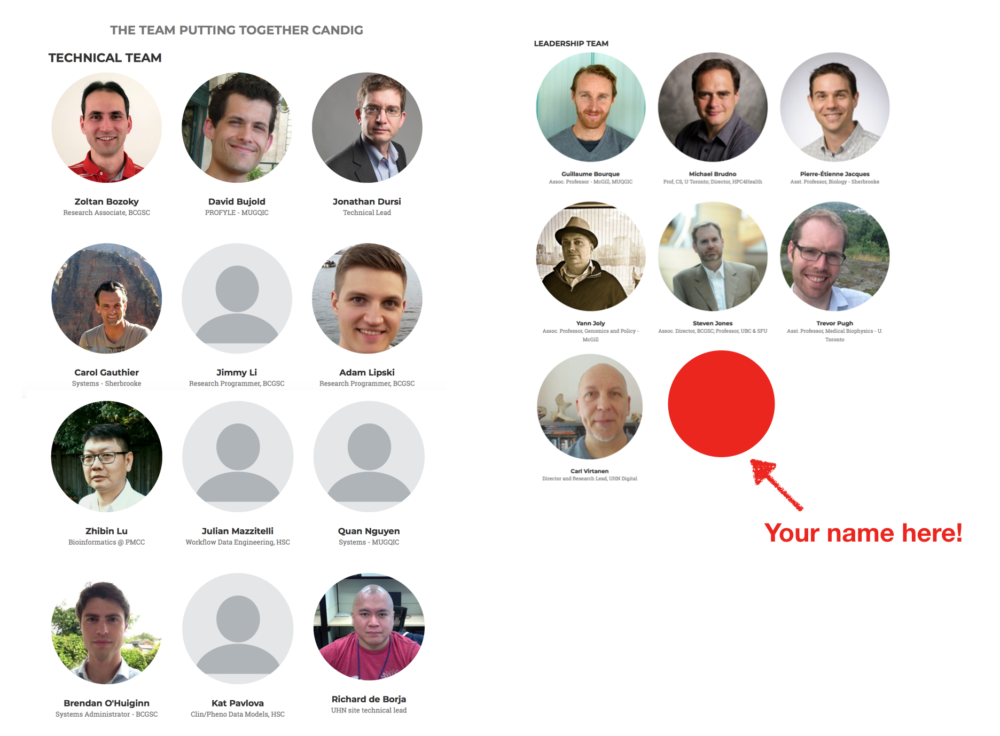] --- class: normal # Image Credits Slide 2 - Patriotic Montage * Michael Kwan, https://www.flickr.com/photos/beyondtherhetoric/4755720719 * DaPuglet, https://www.flickr.com/photos/dapuglet/14340135287 * IHA Rentals, https://www.iha.com/canada-countryside-rentals/2OJs/ * E Pluribus Anthony, https://en.wikipedia.org/wiki/Geography_of_Canada Slide 3 - Silomeggadon * https://pxhere.com/en/photo/1129434 * Dmitrijs Purgalvis, https://commons.wikimedia.org/wiki/File:Abandoned_factory_-_panoramio_(10).jpg * Roy Luck, https://commons.wikimedia.org/wiki/File:Metalwork,_abandoned_US_Steel_iron_mill_(8907655571).jpg Slide 6 - Metagenomics * <a href="https://twitter.com/erikgarrison/status/969560993922736128">https://twitter.com/erikgarrison/status/969560993922736128</a> Slide 8 - Transcriptomics * <a href="http://www.gene-quantification.de">http://www.gene-quantification.de</a> --- class: normal # Image Credits (cont'd) Slide 9 - Genomic Medicine * McCarthy, McLeod, and Ginsburg, “Genomic Medicine: A Decade of Successes, Challenges, and Opportunities” http://stm.sciencemag.org/content/5/189/189sr4.full Slide 11 - Genomic privacy * Julie McMurray https://pixabay.com/en/genomic-privacy-genomic-security-3302478/